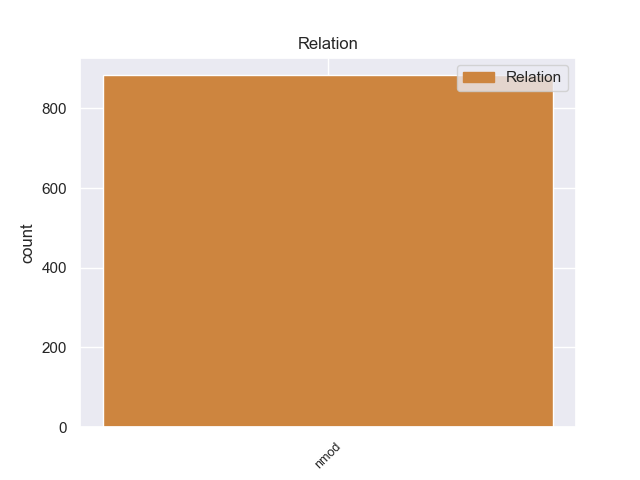
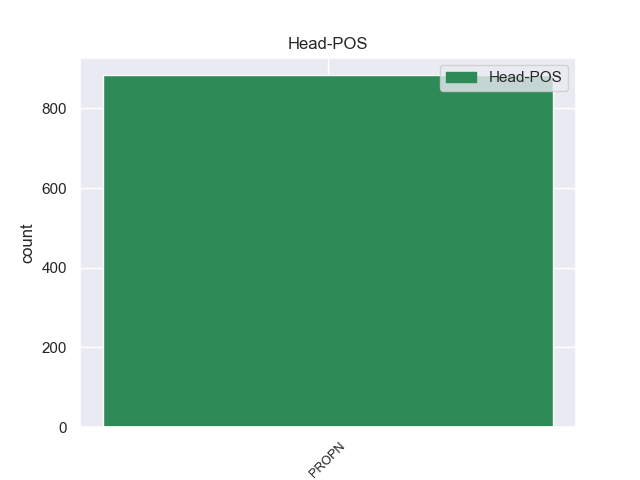
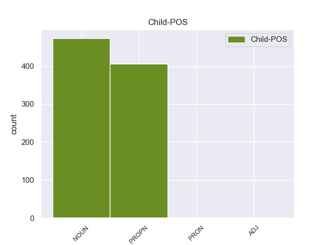

Distribution of features within this leaf



Agreement Rules sorted by frequency.
- When the dependent token is the nominal modifier(nmod) of the head token, and the head token is PROPN
1 В _ _ _ _ 0 _ _ _
2 последнее _ _ _ _ 0 _ _ _
3 время _ _ _ _ 0 _ _ _
4 несколько _ _ _ _ 0 _ _ _
5 раз _ _ _ _ 0 _ _ _
6 проваливали _ _ _ _ 0 _ _ _
7 на _ _ _ _ 0 _ _ _
8 выборах _ _ _ _ 0 _ _ _
9 в _ _ _ _ 0 _ _ _
10 академики _ _ _ _ 0 _ _ _
11 одного _ _ _ _ 0 _ _ _
12 из _ _ _ _ 0 _ _ _
13 крупнейших _ _ _ _ 0 _ _ _
14 современных _ _ _ _ 0 _ _ _
15 историков _ _ _ _ 0 _ _ _
16 - _ _ _ _ 0 _ _ _
17 члена-корреспондента _ _ _ _ 0 _ _ _
18 АН АН PROPN _ Animacy=Inan|Case=Gen|Gender=Fem|Number=Sing 0 _ _ _
19 СССР СССР PROPN _ Animacy=Inan|Case=Gen|Gender=Masc|Number=Sing 18 nmod 18:nmod _
20 В. _ _ _ _ 0 _ _ _
21 Янина _ _ _ _ 0 _ _ _
22 , _ _ _ _ 0 _ _ _
23 прославившегося _ _ _ _ 0 _ _ _
24 раскопками _ _ _ _ 0 _ _ _
25 в _ _ _ _ 0 _ _ _
26 Новгороде _ _ _ _ 0 _ _ _
27 , _ _ _ _ 0 _ _ _
28 находками _ _ _ _ 0 _ _ _
29 и _ _ _ _ 0 _ _ _
30 изучением _ _ _ _ 0 _ _ _
31 берестяных _ _ _ _ 0 _ _ _
32 грамот _ _ _ _ 0 _ _ _
33 . _ _ _ _ 0 _ _ _
Disagree Examples:
1 За _ _ _ _ 0 _ _ _
2 неделю _ _ _ _ 0 _ _ _
3 начальник _ _ _ _ 0 _ _ _
4 управления _ _ _ _ 0 _ _ _
5 собирался _ _ _ _ 0 _ _ _
6 позвонить _ _ _ _ 0 _ _ _
7 Савельеву _ _ _ _ 0 _ _ _
8 , _ _ _ _ 0 _ _ _
9 который _ _ _ _ 0 _ _ _
10 занимал _ _ _ _ 0 _ _ _
11 теперь _ _ _ _ 0 _ _ _
12 такой _ _ _ _ 0 _ _ _
13 же _ _ _ _ 0 _ _ _
14 пост _ _ _ _ 0 _ _ _
15 , _ _ _ _ 0 _ _ _
16 как _ _ _ _ 0 _ _ _
17 и _ _ _ _ 0 _ _ _
18 Семен Семен PROPN _ Animacy=Anim|Case=Nom|Gender=Masc|Number=Sing 0 _ _ _
19 Еремеевич _ _ _ _ 0 _ _ _
20 в _ _ _ _ 0 _ _ _
21 соседней _ _ _ _ 0 _ _ _
22 области область NOUN _ Animacy=Inan|Case=Loc|Gender=Fem|Number=Sing 18 nmod 18:nmod SpaceAfter=No
23 , _ _ _ _ 0 _ _ _
24 и _ _ _ _ 0 _ _ _
25 узнать _ _ _ _ 0 _ _ _
26 о _ _ _ _ 0 _ _ _
27 деловых _ _ _ _ 0 _ _ _
28 качествах _ _ _ _ 0 _ _ _
29 Ефимовой _ _ _ _ 0 _ _ _
30 . _ _ _ _ 0 _ _ _
1 Васич Васич PROPN _ Animacy=Anim|Case=Nom|Gender=Masc|Number=Sing 0 _ _ _
2 со _ _ _ _ 0 _ _ _
3 взводом взвод NOUN _ Animacy=Inan|Case=Ins|Gender=Masc|Number=Sing 1 nmod 1:nmod _
4 спешил _ _ _ _ 0 _ _ _
5 сюда _ _ _ _ 0 _ _ _
6 . _ _ _ _ 0 _ _ _
1 В _ _ _ _ 0 _ _ _
2 Президиуме Президиум PROPN _ Animacy=Inan|Case=Loc|Gender=Masc|Number=Sing 0 _ _ _
3 Российской _ _ _ _ 0 _ _ _
4 академии академия NOUN _ Animacy=Inan|Case=Gen|Gender=Fem|Number=Sing 2 nmod 2:nmod _
5 наук _ _ _ _ 0 _ _ _
6 ( _ _ _ _ 0 _ _ _
7 РАН _ _ _ _ 0 _ _ _
8 ) _ _ _ _ 0 _ _ _
9 10 _ _ _ _ 0 _ _ _
10 ноября _ _ _ _ 0 _ _ _
11 2003 _ _ _ _ 0 _ _ _
12 года _ _ _ _ 0 _ _ _
13 подписано _ _ _ _ 0 _ _ _
14 соглашение _ _ _ _ 0 _ _ _
15 о _ _ _ _ 0 _ _ _
16 сотрудничестве _ _ _ _ 0 _ _ _
17 между _ _ _ _ 0 _ _ _
18 РАН _ _ _ _ 0 _ _ _
19 и _ _ _ _ 0 _ _ _
20 горно-металлургической _ _ _ _ 0 _ _ _
21 компанией _ _ _ _ 0 _ _ _
22 " _ _ _ _ 0 _ _ _
23 Норильский _ _ _ _ 0 _ _ _
24 никель _ _ _ _ 0 _ _ _
25 " _ _ _ _ 0 _ _ _
26 . _ _ _ _ 0 _ _ _
1 Недавно _ _ _ _ 0 _ _ _
2 в _ _ _ _ 0 _ _ _
3 Центре Центр PROPN _ Animacy=Inan|Case=Loc|Gender=Masc|Number=Sing 0 _ _ _
4 им. имя NOUN _ Animacy=Inan|Case=Gen|Gender=Neut|Number=Sing 3 nmod 3:nmod _
5 Грабаря _ _ _ _ 0 _ _ _
6 появился _ _ _ _ 0 _ _ _
7 вакуумный _ _ _ _ 0 _ _ _
8 стол _ _ _ _ 0 _ _ _
9 , _ _ _ _ 0 _ _ _
10 который _ _ _ _ 0 _ _ _
11 дает _ _ _ _ 0 _ _ _
12 возможность _ _ _ _ 0 _ _ _
13 доливки _ _ _ _ 0 _ _ _
14 и _ _ _ _ 0 _ _ _
15 прессовки _ _ _ _ 0 _ _ _
16 памятников _ _ _ _ 0 _ _ _
17 на _ _ _ _ 0 _ _ _
18 бумажной _ _ _ _ 0 _ _ _
19 основе _ _ _ _ 0 _ _ _
20 . _ _ _ _ 0 _ _ _
1 Элементарный _ _ _ _ 0 _ _ _
2 анализ _ _ _ _ 0 _ _ _
3 в _ _ _ _ 0 _ _ _
4 Институте Институт PROPN _ Animacy=Inan|Case=Loc|Gender=Masc|Number=Sing 0 _ _ _
5 физической _ _ _ _ 0 _ _ _
6 химии химия NOUN _ Animacy=Inan|Case=Gen|Gender=Fem|Number=Sing 4 nmod 4:nmod _
7 РАН _ _ _ _ 0 _ _ _
8 выявил _ _ _ _ 0 _ _ _
9 наличие _ _ _ _ 0 _ _ _
10 алюминия _ _ _ _ 0 _ _ _
11 , _ _ _ _ 0 _ _ _
12 с _ _ _ _ 0 _ _ _
13 которым _ _ _ _ 0 _ _ _
14 , _ _ _ _ 0 _ _ _
15 вероятно _ _ _ _ 0 _ _ _
16 , _ _ _ _ 0 _ _ _
17 и _ _ _ _ 0 _ _ _
18 связаны _ _ _ _ 0 _ _ _
19 удивительные _ _ _ _ 0 _ _ _
20 свойства _ _ _ _ 0 _ _ _
21 клея _ _ _ _ 0 _ _ _
22 . _ _ _ _ 0 _ _ _